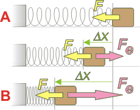

NO ME SALEN
PROBLEMAS RESUELTOS DE FÍSICA DEL CBC
(Leyes de conservación, energía mecánica)
|
|

|
| Adicional NMS 19* - Se aplica una fuerza de 800 N sobre un bloque apoyado sobre un plano horizontal de 1.600 kg que se encuentra inicialmente en reposo y vinculado a un resorte no deformado de constante elástica k = 16.000 N/m. Calcule la máxima compresión del resorte y la aceleración en dicho punto. |
|
Este ejercicio es muy bonito. Hay que poner en movimiento la imaginación.
|
|  |
La fuerza F que se aplica sobre el bloque es constante. Pero la fuerza elástica -como recordarás- no: a medida que el resorte se comprime la fuerza elástica, Fe, crece.
Otro asunto que tenemos que entender es la siguiente: el trabajo que realiza la fuerza F es capaz de variar la energía mecánica del bloque, de modo que se trata de una fuerza claramente no-conservativa.
Dibujé un estado intermedio para que se entienda un poco más el proceso, espero que haya servido, ahora ya lo podemos ignorar. |
|
|
|
Comparemos el estado inicial, A, con el estado B, en el que el resorte alcanza su compresión máxima. En ambas situaciones las velocidades (y la energías cinéticas) son nulas. La energía potencial gravitatoria no varía de modo que podemos ignorarla.
WFnc = ΔEMAB
WF = EpeB — EpeA
Como F es constante su trabajo es sencillo de calcular:
F . Δx . cos 0° = ½ k Δx² — 0
Tiramos ese cero y dividimos ambos miembros por Δx...
F = ½ k Δx
Y despejamos Δx.
Δx = F / ½ k
Δx = 800 N/ ½ 16.000 N/m
|
|
|
|
|
|
Para conocer la aceleración utilizamos la segunda ley de Newton (con un SR hacia la izquierda):
F — Fe = m a
F — k Δx = m a
Despejamos a y la calculamos.
a = (F — k Δx) / m
a = (800 N — 16.000 N/m . 0,1 m) / 1.600 kg
|
|
|
| |
a = — 0,5 m/s² |
o sea, ya rebota |
|
|
|
No era tan dramático. Y además, tiene aristas interesantísimas. Por ejemplo: si este sistema funcionara en vertical y la fuerza F fuera reemplazada por el peso del bloque (que también es constante), ¡el resultado sería el mismo!, pero, ¿qué cosas cambiarías del planteo? ¿Cómo es posible que dos planteos casi idénticos en uno de ellos consideremos a la fuerza que comprime el resorte, F, como no-conservativa, y en el otro planteo, P, conservativa?
Y volviendo al sistema original (el horizontal)... habrás anticipado que si la fuerza se mantiene, el bloque va a estar oscilando permanentemente... ¿cómo puede ser que una fuerza no-conservativa (única) actúe en un sistema que mantiene constante su energía mecánica?
Hacía rato que no me topaba con un ejercicio tan sencillo y a la vez tan interesante. |
|
 |
| *Este ejercicio (modificado) formó parte de un 2do. examen parcial de Física. |
|
|
| DESAFIO: ¿En que posición la aceleración vale cero? |
|
| Algunos derechos reservados.
Se permite su reproducción citando la fuente. Última actualización jun-12. Buenos Aires, Argentina. |
|
|
|